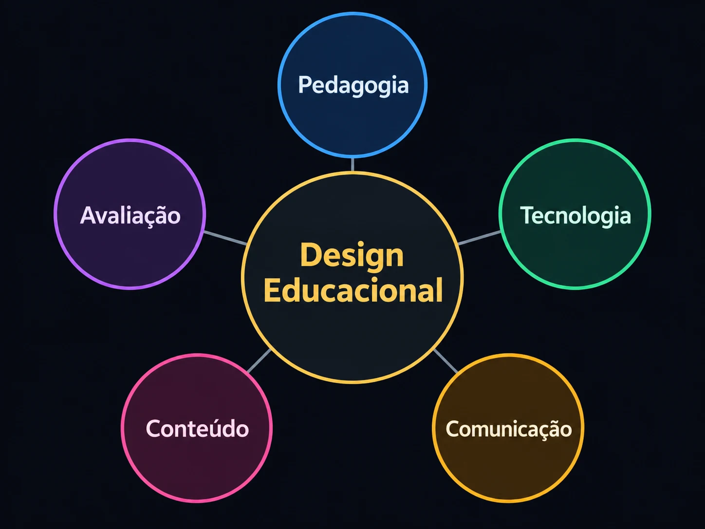

Sobre mim
Educação primeiro. Tecnologia com propósito.
Minha trajetória combina sala de aula, curadoria, produção educacional e desenvolvimento de sistemas com IA — sempre com o Design Educacional como centro das decisões.
História como formação. Design Educacional como prática.
A IA passou a fazer parte desse percurso como ferramenta para pesquisar, testar, estruturar e ampliar processos — não para substituir o julgamento profissional.
Como compreendo o Design Educacional
Um eixo de integração.
O Design Educacional funciona como um eixo de integração. Pedagogia, conteúdo, tecnologia, comunicação e avaliação não atuam de forma isolada: precisam ser articulados para transformar objetivos educacionais em experiências de aprendizagem coerentes.

Formação
Base acadêmica
Formação contínua
Aprendizado que acompanha a prática.
Uma seleção de formações diretamente relacionadas a Design Instrucional, gamificação, inteligência artificial e produção educacional.
Formações complementares
Fundamentos que antecedem a fase de IA.
Como penso o trabalho
Quatro princípios que atravessam os projetos.
Competências
Áreas sustentadas por projetos reais.
Em vez de percentuais abstratos, o portfólio conecta cada competência a projetos, processos e evidências de trabalho.